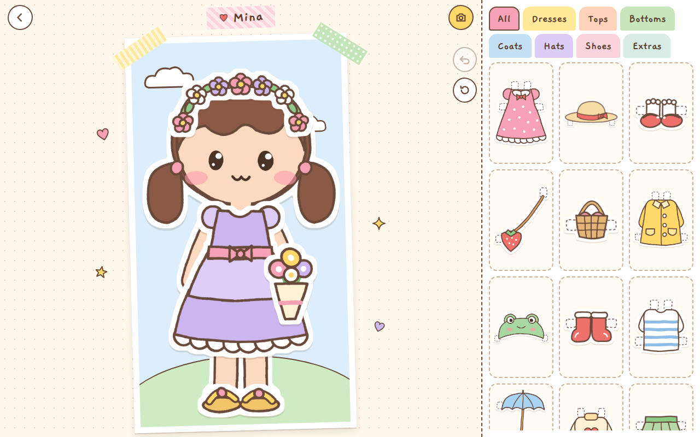
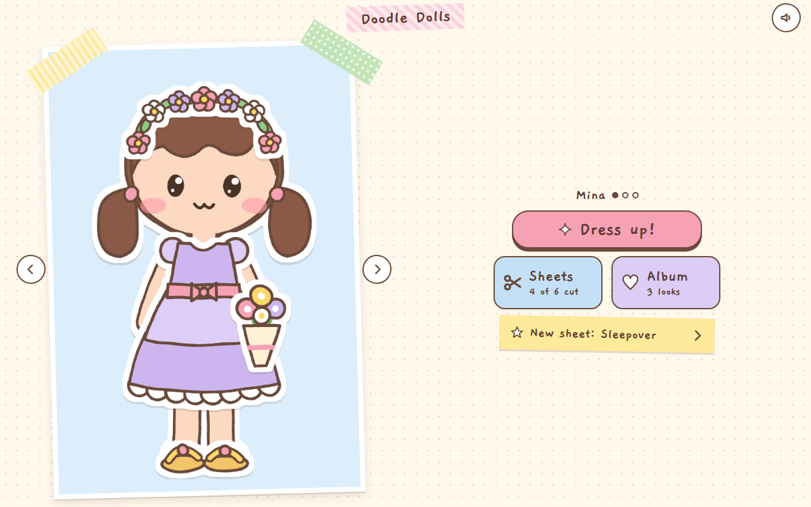
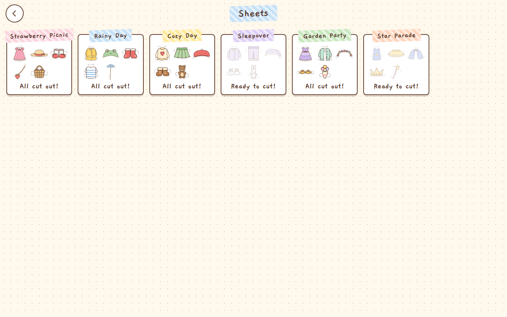

01 / PLAYFUL WORLDSINTERACTIVE GAME



Doodle Dolls
Cut clothes from illustrated sheets, dress your doll, and save your favorite looks. A tactile little game about making something your own.
Play the game ↗Playable browser demo*